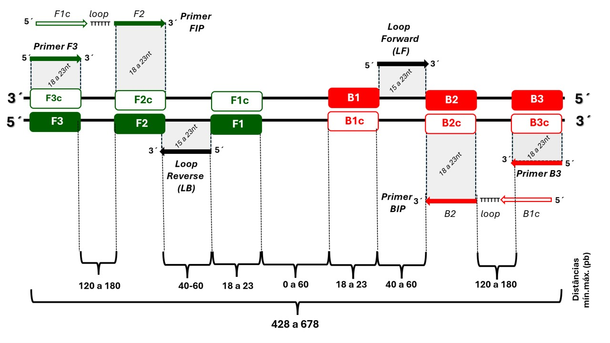

Sequência alvo
Cole a sequência (A, T, G, C) ou informe um identificador (ex.: GenBank).
Referências e Publicações
Notomi T. et al. (2000). Loop-mediated isothermal amplification of DNA. Nucleic Acids Research, 28(12), e63.
Nagamine K. et al. (2002). Accelerated reaction by loop-mediated isothermal amplification using loop primers. Molecular and Cellular Probes, 16(3), 223-229.
Tomita N. et al. (2008). Loop-mediated isothermal amplification (LAMP) of gene sequences and simple visual detection of products. Nature Protocols, 3(5), 877-882.
Mori Y. et al. (2013). LAMP: A rapid nucleic acid amplification method. Microbiological Methods, 2nd ed.
Wang D.G. et al. (2015). A LAMP method for rapid detection of pathogenic bacteria. Journal of Microbiological Methods, 110, 45-53.
Becherer L. et al. (2020). Loop-mediated isothermal amplification (LAMP) – review and classification of methods for sequence-specific detection. Analytical Methods, 12(6), 717-746.
Configurações básicas
Complexidade linguística da sequência (LC%) é uma medida da “riqueza de vocabulário” de um texto genético, baseada na contagem do número de combinações possíveis de nucleotídeos (“entropia” do conjunto de possibilidades) em relação ao número teoricamente possível. Esse valor para a sequência é convertido em porcentagem, sendo 100% o nível mais alto. Intervalo permitido: 70–90%. Valor padrão: 75%.
Condições de reação
Penalidades e ranking
As penalidades são utilizadas apenas para ranquear os conjuntos de primers. Nenhum conjunto é reprovado por penalidade: limites servem como referência de pontuação.
Geometria dos Alvos
Geometria conforme padrão Eiken PrimerExplorer V5 / NEB: amplicon F2–B2 (5′F2→5′B2) = 120–180 bp (região amplificada); gap F3–F2 (3′F3→5′F2) = 0–60 bp; loop F2–F1 e B2–B1 = 40–60 bp; centro F1–B1 = 0–60 bp. Correção (jun/2026): o campo antigo "F3–F2 120–180" era, na verdade, o amplicon F2–B2 — realocado e corrigido.

Esquema ilustrativo da disposição dos primers no método LAMP.